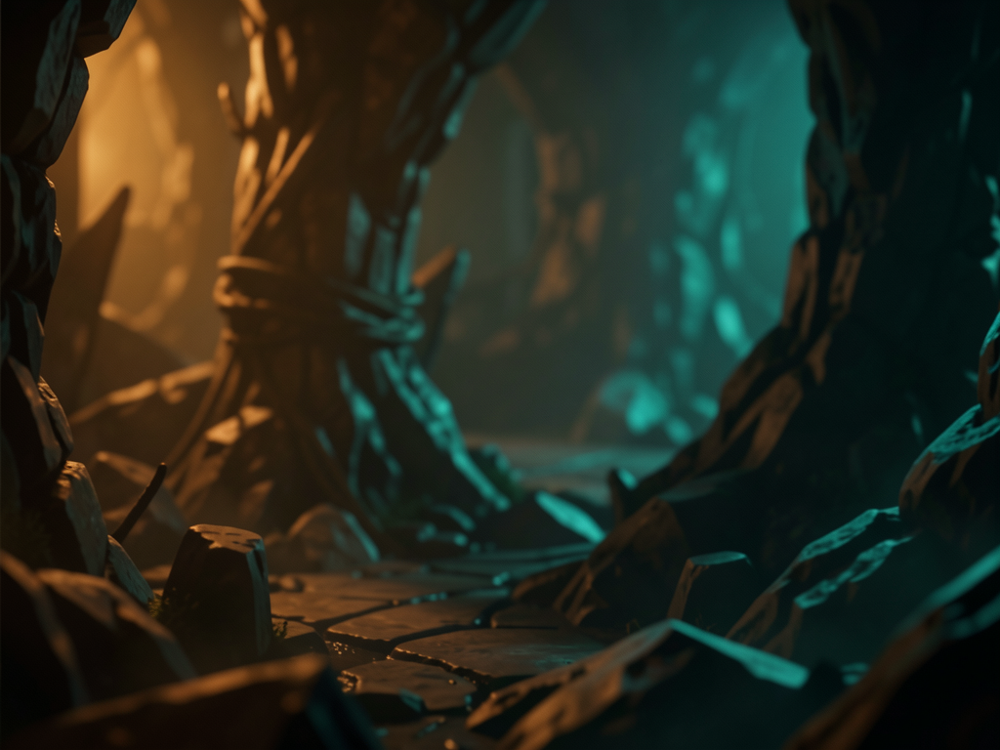

Skills que geram sites scroll-film: a rolagem toca um filme contínuo que se dissolve no conteúdo do site — do zero, self-contained, com ou sem vídeo por IA.

A skill scroll-film-studio entrevista, pitcha 2–3 conceitos criativos nomeados, faz a direção de arte (paleta, tipografia, motion) e constrói a página do zero — HTML/CSS/JS self-contained.
A rolagem inteira funciona como um plano-sequência cinematográfico contínuo, que se dissolve no conteúdo normal do site ao final.
Toda decisão de gosto — conceito, paleta, tipografia, motion, copy, código — é do modelo que roda a skill. Trabalho mecânico vai pra scripts puros.
Contrato de dev ?jump= + window.__ready: screenshots em qualquer posição de scroll e teste de jank real (p95/max de rAF), nunca FPS médio.
Três lanes de construção — a Lane A é grátis e funciona pra qualquer pessoa; as Lanes B/C entram só quando você já tem (ou quer) um engine de vídeo por IA.
GSAP + Lenis: cenas fixadas, parallax, reveals. Grátis, zero setup — só CDN. Funciona pra quem baixar a skill.
Vídeo real gerado por IA (Higgsfield/Kie.ai/fal/Replicate), encadeado shot-a-shot: o último frame de um clipe vira a start image do próximo. Usa créditos do engine.
Mesmo contrato da Lane B, adaptado pro Agnes (agnes-video-v2.0, modo keyframes): interpola um par de imagens por capítulo. Precisa só de AGNES_API_KEY.
Pra Lane A: só o Claude Code. Pras lanes de footage, ffmpeg e a conta do seu engine de vídeo.
A skill roda dentro do Claude Code (CLI da Anthropic).
# instalar / conferir claude --version
Extração de frames, SSIM nas emendas e montagem dos clipes.
# conferir ffmpeg -version
Lane B: conta no Higgsfield/Kie.ai/fal/Replicate. Lane C: só a chave do Agnes.
# Lane C export AGNES_API_KEY="sua-chave"
Instale a skill, peça um scroll-film e deixe o processo guiar: entrevista, pitch, build e verificação.
Baixe o fable5skill pra sua máquina.
git clone https://github.com/inematds/fable5skill.git cd fable5skill
Copie a pasta da skill pro diretório de skills do Claude.
cp -r scroll-film-studio ~/.claude/skills/scroll-film-studio
Abra o Claude Code e descreva o site. A skill dispara com pedidos como "scroll-film", "cinematic scroll site", "scrollytelling website".
claude # > "Constrói um scroll-film site pra minha marca X — vibe elegante e noturna"
A skill pergunta marca, vibe, a jornada da câmera (topo→fim), lane (motion puro ou vídeo real) e destino do deploy — e então pitcha 2–3 conceitos nomeados. Toda pergunta criativa tem o caminho "você decide".
# exemplo de jornada: "campo ao luar → dentro de uma flor → gota de ouro → o frasco"
Os scripts fazem generate → wait → download → extração do último frame → gate de SSIM na emenda. Rascunho barato primeiro; master em resolução cheia só com aprovação.
# Lane B (Higgsfield e afins) scripts/chain-step.sh ... # Lane C (Agnes, custo zero) scripts/chain-step-agnes.sh ... # montar + extrair frames pro scrubber scripts/assemble.sh
Todo build implementa ?jump=<scrollY> e window.__ready; o verify tira screenshot em qualquer posição e mede jank real.
node scripts/verify.js # jank p95/max de rAF + screenshots via ?jump=
Um scroll-film real, publicado, feito com a Lane C (Agnes AI).
5 capítulos indo do ruído de dados dispersos até o acesso centralizado do portal. Gerado com Agnes AI (Lane C, custo zero). Ver no ar →
Conceito, direção de arte e código feitos pelo Claude; ffmpeg/SSIM/deploy em scripts puros; um segundo CLI frontier só pode criticar os conceitos — nunca escrever design ou código.
O repositório já entrega as três lanes; os guardrails valem pra todo build.
prefers-reduced-motion; nunca sobe intermediários de build pro deploy final.